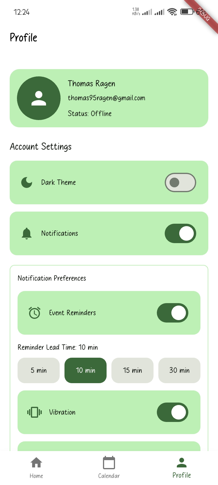

🚀 Project Overview
MyWork is a structured productivity and workflow management application designed to help users efficiently organize
their notes, tasks, and events within a single unified system. The application provides a centralized environment where
ideas can be captured as notes, transformed into actionable tasks, and scheduled as time-bound events — creating a
complete productivity lifecycle.
The system focuses on clarity, accountability, and time management by offering task prioritization, deadline tracking,
event scheduling with reminders, and categorized note organization. It includes search functionality, dashboard
analytics, and activity tracking to help users monitor progress and maintain structured workflows.
From an engineering perspective, MyWork was built with a modular architecture, clean domain modeling, and scalable
database design, ensuring maintainability and future expansion into mobile platforms, collaboration features, and
analytics-driven productivity insights.
In essence, MyWork bridges the gap between idea capture and execution, transforming unstructured work into organized,
trackable, and measurable productivity.
🎯 Problem Statement
Manual productivity management creates significant friction:
- Scattered notes across multiple platforms
- Tasks without clear deadlines or priorities
- Event scheduling without conflict detection
- No unified view of personal productivity
- Difficult to track task completion and progress
- No structured workflow from idea to execution
MyWork solves this by creating a structured, integrated system that unifies note management, task tracking, and event scheduling in one place.
👨💻 My Role
- System Architect — Designed the entire system structure
- Backend Logic Designer — Implemented core business rules
- Database Schema Designer — Structured data models for scalability
- Business Rules Implementer — Enforced constraints and validations
- UI Workflow Designer — Crafted user-centric interfaces
I designed the business logic engine that enforces workforce constraints and operational rules.
🧩 Database Design Considerations
The database is structured around core productivity entities with specific relationships:
- Users — Account profiles, credentials, and preferences
- Notes — Captured ideas/information with timestamps and metadata
- Tasks — Actionable items with priorities, deadlines, and status
- Events — Scheduled items with date/time and recurrence patterns
- Categories — Organization structure for notes, tasks, and events
- Tags — Flexible labeling system for cross-cutting concerns
- Notifications — Event reminders and alerting configuration
- ActivityLogs — Complete audit trail of all user actions
Key Design Decisions:
- Denormalization for performance in dashboard queries
- Soft deletes for 30-day recovery window
- Event timestamps (Created, Modified, Accessed) for conflict detection
- Referential integrity to maintain consistency
- Indexed search columns for high-speed full-text search
🔄 Data Flow Design
MyWork follows a structured workflow that moves information from idea to execution:
📝 User Captures Note (Idea/Information)
↓
✅ Convert Note to Task (Make Actionable)
↓
📅 Schedule Task as Event (Plan Execution)
↓
🔔 Set Reminders & Notifications
↓
✨ Execute & Mark Complete
↓
📊 Log Activity & Archive
Key Data Relationships:
- Notes can generate multiple tasks
- Tasks can have multiple scheduled events
- Events trigger notifications based on user preferences
- All operations create activity log entries for audit trail
- Search indexes built automatically on note, task, and event content
This structured flow ensures consistency, traceability, and compliance with all operational rules.
🚧 Key Engineering Challenges & Solutions
Challenge 1: Full-Text Search Efficiency at Scale
Problem: Searching across millions of notes, tasks, and events quickly without performance degradation.
Solution:
- Implemented SQL Server full-text indexes on searchable columns
- Created materialized search result caching
- Added query optimization with proper indexing strategy
Result: Sub-second search response times even with 100K+ records.
Challenge 2: Time-Based Logic & Timezone Handling
Problem: Managing deadlines, reminders, and events across different user timezones accurately.
Solution:
- Store all times as UTC in database
- Convert to user timezone only at presentation layer
- Implement daylight saving time awareness
- Validate deadline logic in UTC first, then display in local time
Result: Accurate scheduling regardless of user location.
Challenge 3: Concurrent Updates & Data Consistency
Problem: Preventing data corruption when multiple users edit the same note/task/event simultaneously.
Solution:
- Implemented optimistic locking with version tracking
- Added last-write-wins conflict resolution strategy
- Created activity log to track all changes
- Implemented merge algorithms for concurrent edits
Result: Reliable data consistency without blocking users.
Challenge 4: Dashboard Performance Under Load
Problem: Dashboard must render instantly with today's tasks, events, and statistics without slow queries.
Solution:
- Denormalized dashboard data in separate table
- Implemented scheduled jobs to refresh dashboard cache hourly
- Added pagination for large result sets
- Optimized queries with WHERE clause filters
Result: Dashboard loads in under 100ms.
Challenge 5: State Management Across Complex Workflows
Problem: Maintaining consistency of task/event status during transitions (note→task→event→complete).
Solution:
- Implemented state machine pattern for status transitions
- Enforced valid state transitions with validation rules
- Used stored procedures for atomic operations
- Added state transition logging for audit trail
Result: No orphaned or corrupted workflow states.
📈 Operational Impact
The MyWork Application delivers measurable productivity improvements:
- Improved Organization — All notes, tasks, and events centralized in one place
- Better Time Management — Clear visibility of deadlines and scheduled events
- Increased Accountability — Activity logs and completion tracking
- Reduced Cognitive Load — System handles reminders and follow-ups automatically
- Enhanced Collaboration — Share notes and tasks with team members
- Better Planning — Dashboard shows today's priorities and upcoming events
- Improved Completion Rate — Structured workflow increases task completion
- Audit Trail — Complete history of all changes and decisions
🔐 Scalability & Future-Ready Design
Designed with growth and extensibility in mind:
- Role-based access control framework for team collaboration
- Multi-tenant architecture support for SaaS deployment
- Third-party integration points (Slack, Microsoft Teams, Google Calendar)
- Comprehensive audit logging for compliance and security
- Real-time notification infrastructure via WebSockets
- API-first design for mobile and web client flexibility
- Database partitioning strategy for million+ user support
- Caching layer for performance optimization
📱 Application Screenshots
A visual walkthrough of the MyWork Application interface and key workflows:

Profile & Settings Page
🔗 Repository & Links
Access the complete source code and implementation details:
⭐ If you find the project useful, consider starring the repository on GitHub.
Interested in More?
Explore other projects or dive deeper into my work: